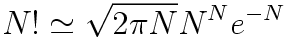
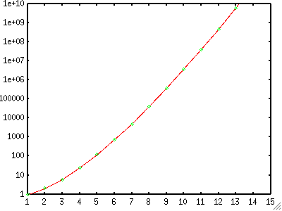

<!DOCTYPE HTML PUBLIC "-//W3C//DTD HTML 4.01 Transitional//EN">
<html lang="ja">
<head>
<title> gnuplot / fractal / recursive </title>
<!-- Generated 2002/4/14 -->
<!-- $Id: recursive.html,v 1.6 2004/12/04 10:01:51 kawano Exp $ -->
<meta http-equiv="content-type" content="text/html;charset=iso-2022-jp">
<link rel="stylesheet" href="../style-new.css" type="text/css">
</head>

<body>

<table width="100%" border="0" cellpadding="0" cellspacing="0">
<tr><td bgcolor="#cccc90" width="320">
    <div align="left">
    <a href="../index.html">
    
    </a></div></td>
    <td bgcolor="#cccc90">
      <div align="center"><h3> - not so Frequently Asked Questions - </h3> </div>
      <div class="update"> update 2004/11/29 </div>
    </td>
</tr>
<tr><td bgcolor="#fae8ba"></td>
    <td bgcolor="#fae8ba"><div class="navi"> 
<a href="../index.html">          HOME </a> |
<a href="../intro/index.html">    INTRODUCTION </a> |
<a href="../general.html">        INFORMATION </a> |
<a href="../gallery/index.html">  GALLERY </a> |
<a href="recursive-e.html">       ENGLISH </a>
</div></td></tr>
</table>
<hr class="topsep">


<table width="100%" border="0" cellpadding="0" cellspacing="0">
<tr><td id="menu">
 <p> <a href="index.html">   $B%U%i%/%?%k(B  </a></p>

 <ul>
  <li><a href="recursive.html">  $B4X?t$N:F5"Dj5A(B </a>
  <li><a href="mandelbrot.html"> Mandelbrot$B=89g(B </a>
  <li><a href="selfsq.html">     Julia$B=89g(B ($B<+8JJ?J}%U%i%/%?%k(B) </a>
 </ul>
</td>

<td id="content">


<h1><a name="top"> $B4X?t$N:F5"Dj5A(B </a></h1>

<p> gnuplot$B$G$O4X?t$r:F5"E*$KDj5A$9$k$3$H$,$G$-$^$9!%:F5"E*Dj5A$H$O!$(B
$B4X?t$NDj5A<0$NCf$K$=$N4X?t<+?H$,4^$^$l$F$$$k$b$N$G$9!%Nc$($P!$@0?t(B N 
$B$N3,>h(B N!=FAC(N)$B$O(B FAC(N)=N*FAC(N-1) $B$H=q$1$^$9$N$G!$(Bgnuplot$B$G$O<!$N$h(B
$B$&$KDj5A$9$k$3$H$,$G$-$^$9!%(B</p>

<pre class="sample">
gnuplot&gt; fac(n) = n * fac(n-1)
</pre>

<p> $B$3$N(B1$B9T$GJQ?t(BN$B$r(B1$B$D$E8:>/$5$;$k(Bloop$B$N$h$&$K$J$j$^$9$,!$$3$N$^$^$G(B
$B$O(BN$B$OIi$NL58BBg$^$GJQ2=$9$kL58B%k!<%W$H$J$C$F$7$^$$$^$9$N$G!$%k!<%W$r(B
$B;_$a$k9)IW$,I,MW$G$9!%$3$l$K$O(B3$B9`1i;;;R$rMQ$$$^$9!%(BN=0$B$K$J$C$?$i:F5"$r(B
$B;_$a$k$h$&$K$9$k$K$O!$<!$N$h$&$K(BN$B$K4X$9$k>r7o<0$rIU$1$^$9!%(B</p>

<pre class="sample">
gnuplot&gt; fac(n) = (n==0) ? 1 : n * fac(n-1)
</pre>

<p> $BEy9f1&B&$N(B<tt>(n==0)</tt>$B$,>r7o<0$G!$(BN$B$,(B0$B$KEy$7$$$H$-$K??$K$J$j!$(B
$B$=$N;~$O5?LdId!)$N$9$01&$r<B9T$7$^$9!%56$N>l9g$O%3%m%s!'$N1&B&$r<B9T$9(B
$B$k$N$G!$:F$S<+J,<+?H$G$"$k4X?t(Bfac(n)$B$r(Bcall$B$7$^$9!%$3$NH=Dj$K$h$j!$(BN=0
$B$K$J$C$?;~E@$G$=$l0J>e4X?t(Bfac(n)$B$r(Bcall$B$9$k$N$rDd;_$7$^$9!%(B</p>

<p> N!$B$r7W;;$9$k$K$O!$(BN$B$,@0?t$G$J$1$l$P$$$1$^$;$s!%$3$l$K$O(Bgnuplot$B$N4X(B
$B?t(Bint()$B$r;H$C$F0z?t(Bn$B$NC<?t$r@Z$jMn$H$7$^$9!%$3$N7k2L!$0z?t$,<B?t$G$"$C(B
$B$F$b!$>o$K@0?t$N3,>h$r7W;;$7$^$9!%$h$j87L)$K$O(BN$B$,@5$G$"$k$H$$$&@)8B$b(B
$B$"$j$^$9$,!$$3$3$G$OF~$l$F$$$^$;$s!%(B</p>

<pre class="sample">
gnuplot&gt; fac(x) = (int(x)==0) ? 1.0 : int(x) * fac(int(x)-1.0)
</pre>

<p> $B4X?t(Bfac(x)$B$N7W;;7k2L$O!$<!$N$h$&$K$J$j$^$7$?!%(B</p>

<pre class="sample">
gnuplot&gt; fac(x) = (int(x)==0) ? 1.0 : int(x) * fac(int(x)-1.0)
gnuplot&gt; print fact(1)
1.0
gnuplot&gt; print fact(5) 
120.0
gnuplot&gt; print fact(5.5) 
120.0
gnuplot&gt; print fact(20) 
2.43290200817664e+18
</pre>

<p> N!$B$N6a;wCM$O(BStirling$B$N8x<0$G7W;;$G$-$k$3$H$,CN$i$l$F$$$^$9!%(B</p>

<div align="center"></div>

<p> $B>e$GDj5A$7$?4X?t(Bfac(x)$B$H(BStirling$B$N8x<0$N7k2L$rHf3S$7$F$_$^$7$g$&!%(B</p>

<pre class="sample">
gnuplot&gt; stirling(x) = sqrt(2*pi*x) * x**x * exp(-x)
gnuplot&gt; set xrange [1:15]
gnuplot&gt; set yrange [1:1e+10]
gnuplot&gt; set log y
gnuplot&gt; set sample 15
gnuplot&gt; plot stirling(x) notitle with lines,\
&gt;             fact(x)     notitle with points
</pre>

<div align="center">

</div>

<div class="top"><a href="recursive.html#top"></a></div>

</td>
</tr></table>
<hr class="topsep">

</body>
</html>
